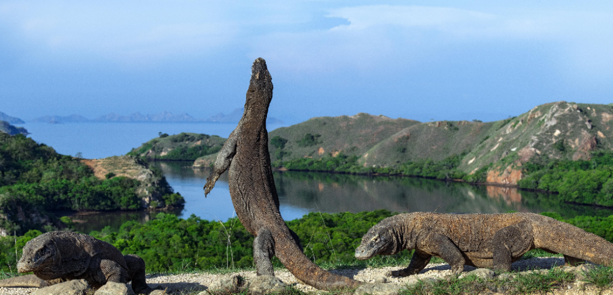
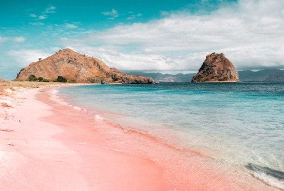

Keindahan Labuan Bajo, Surga Tersembunyi di Timur Indonesia

Indonesia merupakan negara yang dikenal sebagai negara maritim, memiliki banyak pulau, dan keindahan lautnya tidak perlu diragukan lagi. Hal tersebut menjadikan Indonesia sebagai salah satu destinasi wisata yang sering dikunjungi oleh wisatawan mancanegara, salah satunya yaitu Labuan Bajo. Labuan Bajo merupakan desa yang terletak di Kecamatan Komodo, Kabupaten Manggarai Barat, Provinsi Nusa Tenggara Timur.
Dengan daya tariknyayang sangat istimewa, Labuan Bajo telah ditetapkan menjadi tujuan wisata utama yang bahkan dikenal hingga ke luar negeri. Labuan Bajo memiliki banyak sekali obyek wisata yang terkenal. Apa aja sih? Yuk simak beritanya.

Pulau padar meruapakan pulau terbesar ketiga setelah Pulau Komodo, dan Pulau Rinca. Secara geografis, Pulau Padar relatif lebih dekat dengan Pulau Rinca dibandingkan Pulau Komodo, yang dipisahkan oleh Selat Lintah. Pulau Padar juga merupakan salah satu warisan dari UNESCO karena masih berada di kawasan Taman Nasional Komodo, tetapi perbedaannya yaitu Pulau Padar tidak dihuni oleh ora atau komodo. Di dalam Pulau Padar, terdiri dari tiga - empat pulau kecil di sekelilingnya.
Pulau Padar terkenal dengan lanskap indahnya, namun untuk menikmatinya perlu trekking sekitar 45 menit hingga 1 jam. Anda tidak perlu khawatir, karena semuanya akan terbayar dengan pemandangan yang mempesona. Selain itu, jangan lupa untuk membawa sepatu trekking, sunblock, dan juga pakaian yang nyaman, ya.

Pulau Rinca menjadi salah satu wilayah yang menjadi habitat asli binatang purbakala Komodo. Oleh sebab itu pulau yang tergabung dalam Taman Nasional Komodo ini dijaga dan dikelola oleh pemerintah.Perbedaan Pulau Rinca Flores dan Pulau Komodo terletak di kontur geografis masing-masing pulau. Pulau Komodo didominasi hutan, sementara Rulau Rinca lebih banyak padang rumput luas alias savana.

Pulau Komodo dikenal sebagai habitat asli hewan komodo. Pulau ini juga merupakan kawasan Taman Nasional Komodo. Pulau Komodo sangat menakjubkan, menelusuri pulau yang eksotis, menyelami birunya laut, dan bermandikan cahaya mentari sambil melihat jejak-jejak kehidupan masa lalu yang terpelihara dan akan menjadi bagian dari ragam keindahan Indonesia.

Spot lain yang tidak boleh ketinggalan adalah Pink Beach atau yang dikenal sebagai Pantai Merah oleh masyarakat lokal. Warna merah di pantai ini ternyata berasal dari hewan mikroskopis dan pecahan batu karang berwarna kemerahan di sekitar pesisir pantai.
Pink Beach bisa menjadi spot foto menarik untuk mengabadikan pemandangan yang tak bisa ditemukan di tempat lain. Selain kecantikan pantainya yang memukau, Pink Beach juga menawarkan pemandangan bawah laut yang spektakuler. Di bawah permukaan airnya, Anda akan menemukan dunia bawah laut yang begitu mengagumkan dengan keberagaman ikan, terumbu karang, dan berbagai jenis makhluk laut lainnya.
Jadi, jika Anda mencari petualangan alam yang luar biasa dan ingin menyaksikan keajaiban alam Indonesia, Labuan Bajo adalah tempat yang harus Anda kunjungi. Keindahan alam yang mengagumkan dan pengalaman yang tak terlupakan menanti Anda di sini. Selamat menjelajahi surga tersembunyi di Timur Indonesia!
Sumber : Klik Disini